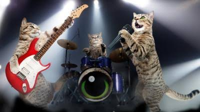
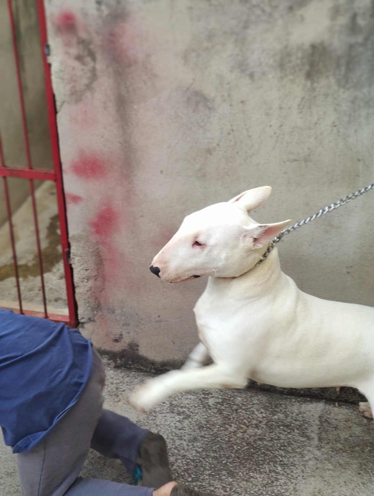

Ola :) meu nome é Pedro tenho 16 anos e bom estou tentando meu melhor para me tornar um bom programador no futuro(mesmo que me interesse mais pela área de manutenção de computadores)...apesar de minhas habilidades serem bem precárias, estou tentando melhorar.
|  | Gosto muito de músicas(rock clássico de preferência), video games, comida e gatos. |
|  | Ao lado temos essa belíssima e memorável foto da minha cadelinha Mizae(ou misae eu nunca sei ao certo) que, apesar de nada relevante ao site, achei interessante adicioná-la. |